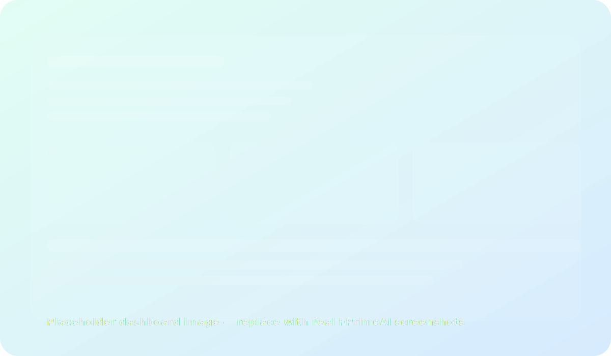

Turn operations into a live, measurable system.
FPrimeAI unifies camera streams, sensors, and operational systems into one dashboard—then explains what’s happening, why it’s happening, and what to do next.
A single view for every team
KPIs, anomalies, alerts, and recommendations—tailored for plant managers, QA, maintenance, and leadership.
Computer vision + IoT capture what’s happening across lines, sites, and stores.
A unified data layer + analytics + AI Copilot explain patterns, causes, and risks.
Alerts, tickets, and workflows help teams fix issues—not just observe them.
Build your operational stack—module by module.
Start with one use case and expand across sites. Each module shares the same data layer and governance.
Explore productsDetect defects, mislabels, missing parts, and process deviations in real time.
PPE detection, restricted-zone alerts, incident review, and compliance reporting.
Root-cause hints, loss trees, shift comparisons, and line health monitoring.
Ask questions in natural language and get answers grounded in your data.
Normalize streams, timestamps, events, and KPIs across all sites and systems.
ERP/MES/WMS, PLCs, cameras, sensors, ticketing, and notification channels.
Personalized widgets and alerts for leadership, operations, QA, and maintenance.
Proven patterns across industries
Choose a ready-made solution package and adapt it to your processes.
From dashboards to decisions.
Most tools stop at reporting. FPrimeAI connects insights to action with alerting, workflows, and an AI Copilot that explains the “why”.
- Faster detection of quality issues
- Earlier warnings for downtime risks
- Clear accountability with event timelines
- Governed, auditable access to operational data
1) Define one measurable use case → 2) Run a pilot → 3) Scale across lines/sites.
Cloud, hybrid, or on‑prem—depending on your security and latency needs.